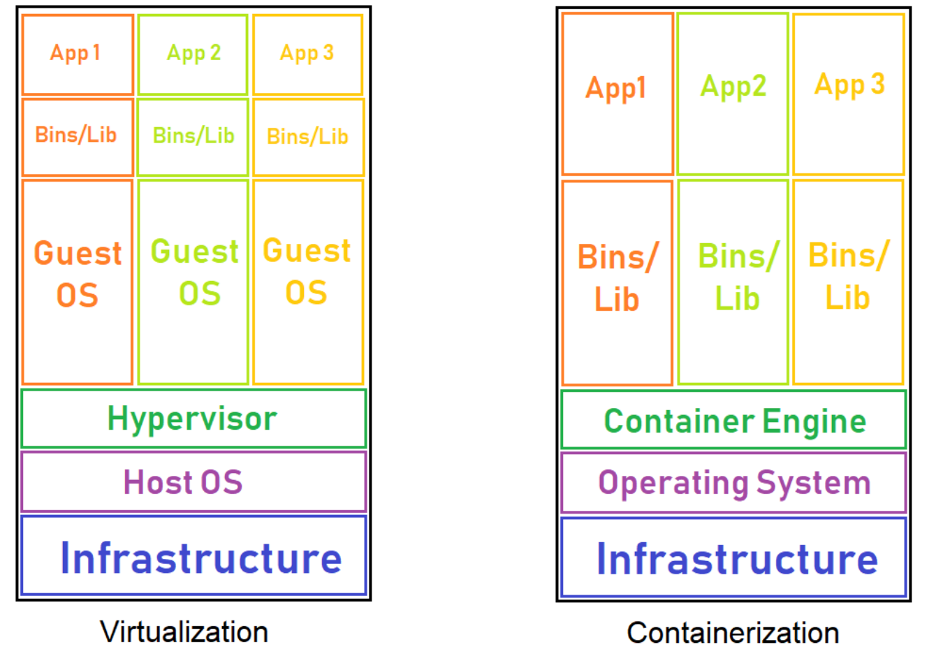

After taking a look at each of these technologies, the question is, which one should be used? The answer is that it depends on several different points. Essentially, each business and application will have different needs, requirements, and purpose. The choice of virtualization versus containerization depends on the business development and operational model, and the way applications are written and produced. Both are software technologies that create self-contained virtual packages, but to choose the one that will best suit the user’s needs, we will look at the following points.
Speed: When it comes to speed, containers were meant to significantly reduce the time needed to deploy and run an application. The container starts immediately, since the operating system is already up and running, so the application will start up without any noticeable delay. On the other hand, virtual machines need to start the entire operating system, which includes the full boot process. This will also include the startup of the services, and it will take much longer than it would for a container.
Operating system requirements: A virtual machine is best used in the case when a business needs to run multiple applications that require the full functionality of a dedicated operating system. However, if most of the applications have the same operating system requirements, the containers would be a much more practical solution.
Resources: Since virtual servers run separate operating systems, and every system call has to go through the virtualization layer, a certain amount of overhead is created, causing more resources to be used. However, CPU virtualization is relatively cheap, so the CPU overhead of a virtual machine can be much smaller. When it comes to containers, they can start up pretty quickly, so their memory consumption doesn’t increase.
Portability and application sharing: Since container images are much smaller than virtual machines, they are easier to transfer and save space on the host’s filesystem. Virtual machines, on the other hand, need to have a copy of the whole operating system, including the kernel, system libraries, configuration files, all the directories required by the operating system and all the utilities.
However, it is also important to note that there are also ways of combining virtualization and containerization so that both technologies’ advantages are brought together. Such a combination is called a hybrid container architecture, and it can combine them by putting a virtual machine inside of a container, or a single container inside of a virtual machine, or multiple containers inside a virtual machine.